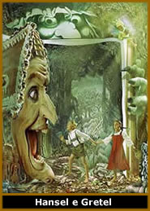
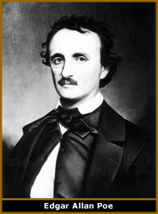
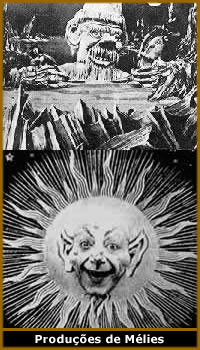
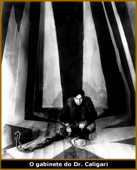
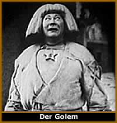
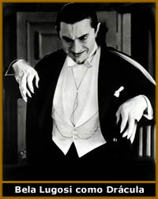

Mas, afinal, o que é o verdadeiro horror?
Que sentimento é este, ao mesmo tempo, proibido, letal
e desesperador, que seduz a humanidade há séculos?
Como se propagou ao longo dos tempos? O que é o horror
agora? O que foi antes? E como era nos primórdios do cinema?
Desde os imemoriais tempos das cavernas, o homem,
atraído pelo que não pode entender, retrata o que
teme. Não raro os desenhos e rabiscos rupestres demonstravam
o perigo das florestas e das caçadas. Trovões, relâmpagos,
chuvas, erupções vulcânicas, terremotos, tufões,
eclipses, enfim, toda sorte de intempéries eram interpretadas
como sinais dos deuses (ou de demônios); indícios
vingativos, de aproximação do fim, punições,
castigos místicos indecifráveis. A floresta não
passava de uma enorme ratoeira humana. Lá, na escuridão,
entre folhas, animais sibilantes e olhos escarlates sempre atentos,
vivia o verdadeiro mal. Assim, também era o mar, um ambiente
inóspito, turvo, escuro e incerto, povoado por estranhas
criaturas.
Cada
momento histórico teve seus horrores. Se pudéssemos
inalar o ar medieval, com certeza, nossas narinas sentiriam o
inquietante fedor de carne queimada. Na Idade Média, temeu-se
o demônio e deflagraram-se mitos e lendas em torno
de seres malignos prestes a corromper e danar humanidade. Mais
tarde, a Santa
Inquisição disseminou o terror para manter a
hegemonia da Igreja Católica, com suas torturas e mortes.
O que dizer, então, dos contos infantis
dos irmãos Grimm, Han Christian Andersen e de tantos outros?
Hansel e Gretel são deixados à mercê de uma
bruxa canibal enquanto Chapéuzinho Vermelho é
molestada pelo primeiro lobo que se disfarça na mata.
O cinema, por sua vez, sempre tentou retratar
o horror, e a maneira como ele nos atinge. Desde a exploração
do indizível e do desconhecido no horror gótico
do século XIX - Bram
Stoker, Poe,
Lovecraft,
Carmilla, W.W. Jacobs, Maupassant, Bierce etc - até o horror
cyberpunk dos tempos atuais - Alien, Predador, Resident evil -
uma coisa sempre foi constante nas películas: o Medo.
Princípios
O medo e o terror são estados ideais a serem
retratados pelo cinema. Que outra mídia poderia captar,
de maneira fidedigna, os sons, as imagens, os climas e as situações
que compõe o genuíno terror? Na sala escura, há
um certo desprendimento, uma disposição para aceitar
o improvável. É quando aflora o inconsciente e o
torpor faz extravasar nossa fantasias irracionais. Talvez, por
isso, o cinema fantástico seja visto como escapismo de
pouca importância. No entanto, se há escape de nossa
realidade cotidiana, o destino são os nossos medos, o proibido,
o tabu de época e a patologia de nosso tempo.
Desde meados do século retrasado, quando
se realizaram os primeiros experimentos com sais de prata, levando
à descoberta da fotografia, e o aperfeiçoamento
da captação de luz que resultaram no cinema, o imaginário
popular passou a conviver com um rico gênero literário
transformado em imagem na telas, o chamado horror gótico.
O horror
gótico
O
termo gótico foi aplicado a este tipo de horror
muito depois de seu apogeu. Trata-se de uma modalidade com classe,
chique, estilosa, bem européia, de cadeiras de couro, cortinas
de veludo e mortes com pouco sangue. De maneira geral, centra-se
em cenários típicos do medievalismo: castelos longínquos,
mansões amaldiçoadas, pequenos vilarejos, homens
de cartola e fraque, damas de vestidos longos e cabelos bem arrumados,
velas cuja luz amarelada afasta (mas não muito) a escuridão,
carruagens, capas negras, teatros mal-assombrados, sequestros,
lutas de espada, festas à fantasia com máscaras
atemorizantes, fantasmas nos esgotos de Paris, assassinatos misteriosos
e corvos negros que repetem nunca mais e sempre um delicado filete
de sangue rubro.
Temos, como obra literária marcante do
horror gótico (pouco antes da invenção do
cinema), o conhecido Drácula, de Bram Stoker,
que estabeleceu o padrão (mais tarde estereotipado) do
gênero. Os escritos do americano Ambroise Bierce (desaparecido
após ir para a guerra no México, no início
do século vinte. Curiosamente, Bierce tem inúmeras
histórias de horror que lidam com desaparecimentos), Edgar
Alan Poe, Guy de Maupassant, Arthur Conan Doyle, Mary
Shelley, Robert Louis Stevenson, Anatole France, M. G. Lewis,
Charles Maturin e muitos outros forneceram a base para o surgimento
dos primeiros fotogramas de terror.
George Mélies
De certa forma, a primeira exibição
pública feita pelos irmãos Lumiére teve o
efeito de um filme de terror. Quando A chegada do trem à
estação foi exibido, causou frenesi e inquietação
entre os presentes. Muitos tentaram se proteger do bólido,
que parecia invadir o recinto. Esse elemento chocante sempre esteve
presente no cinema, a função de surpresa, de quebra
da tradição, de emulação da realidade
(com intensificação da catarse e da participação
do público em seus momentos agradáveis... e, em
se tratando de horror, nos desagradáveis) é parte
da própria definição de o que deve ser o
cinema.
O
primeiro filme de horror propriamente dito foi talvez The
Devils castle, de George Mélies, onde o demônio
é representado (de maneira um tanto quanto cômica)
por um morcego. Mélies, um mágico e dono do Teatro
Robert-Houdin em Paris, entrou em contato com o cinema
logo na primeira exibição pública feita pelos
irmãos Lumiére, em 28 de Dezembro de 1895. Em fevereiro
do ano seguinte, adquiriu sua primeira câmera, e, em maio,
começou a fazer seus filmes.
A tecnologia no cinema estava apenas engatinhando.
Ele inventou e estudou, então, inúmeros mecanismos
para criar os mais diversos efeitos. Seus estudos de múltipla
exposição são conhecidos até hoje
e criam o efeito de se ver objetos e pessoas aparecendo e desaparecendo
à distância ou mudando de forma. Foi o primeiro cineasta
a se envolver de maneira séria no cinema fantástico
e a obter resultados interessantes na tela. Sua abordagem dos
mitos do monstro do pólo norte, vampiros, viagens espaciais
e outras ficções improváveis permanecem como
exemplos clássicos e estabeleceram, na época, o
conceito de efeitos especiais.
Entretanto, Mélies era muito mais um mágico
do que um cineasta, e, com o paralelo desenvolvimento da narrativa
cinematográfica por outros e a falta de uma política
capitalizadora por parte de seu estúdio, ele se tornou,
lentamente, obsoleto diante de nomes como Murnau, Edwin S. Porter
e David W. Griffith, que investiram pesado na narrativa e montagem.
Ele terminou seus dias, após a falência de sua produtora,
em 1913, vendendo pequenos brinquedos e jogos de mágica
em banquinhas nas ruas de Paris, vindo a falecer em 1938.
As experiências de George Mélies no
cinema ainda incipiente foram vagamente cômicas. O intuito
do antigo mágico de circo era entreter, valendo-se dos
efeitos e maquinários para realizar seus filmes (cenários
gigantescos, luas com rostos, foguetes voadores etc.). Somente
com o passar dos anos, o terror pôde amadurecer e expandir-se.
O tempo trouxe novas obras tanto nos Estados Unidos quanto na
Europa.
Experimento tecnológico
Em 1910, Edison faz a primeira versão cinematográfica
de Frankenstein, (inspirada nas inúmeras adaptações
teatrais da época). Neste filme, temos um tema agregado
ao próprio conceito de cinema: O Dr. Frankenstein,
obcecado com a idéia de manipular a vida, constrói
um experimento que o levará à ruína.
O cinema também era um experimento tecnológico,
o final do século XIX, com seu impressionante e vertiginoso
avanço (alavancado pela revolução industrial,
seguido do desenvolvimento de máquinas mais potentes, motores
a explosão, etc) impressionava e assustava as pessoas que
não estavam preparadas para lidar com as conseqüências
éticas e morais dessas novas descobertas.
Atualmente, vivemos uma situação
semelhante. Com o desenvolvimento da engenharia genética,
podemos manipular o mapa cromossômico do ser humano, o DNA
está a nossa mercê para que possamos criar quantos
transgênicos quisermos. Assim como o Dr. Frankenstein,
temos a oportunidade de brincar de Deus, de manipular a vida,
e a forma como ela virá a ser. Ao monstro, a vida é
dada, mas ele não passa de um tubo de ensaio, um teste
bem-sucedido, um experimento que sente, sofre e chora, e se vinga
quando seu criador se esquece disso.
O horror é visionário. Daí,
o conto de terror ter capturado de maneira consistente nossos
medos e ansiedades coletivas. Filmes como Frankenstein mostram
que, muitas vezes, o inimigo vem de dentro, e não do desconhecido.
Eis aí a crítica à prepotência e à
arrogância do autocentrismo que não admite questionamento
ou reavaliação.
Cesare e o inconsciente
Um dos pontos marcantes do cinema de horror é
o clássico O gabinete do Dr. Caligari, de Robert
Wiene. Supostamente, Wiene não teria passado de um diretor
contratado. Fritz Lang, que mais tarde faria, no gênero
horror, o imortal M - O vampiro de Dusseldorf deveria
ter dirigido o filme, mas não pôde devido a obrigações
previamente assumidas.
Caligari
expõe o mais latente e forte horror da primeira metade
de século passado; mais uma vez, o horror que vem de dentro,
que está entre nós... o horror da mente. Com os
desenvolvimentos da pesquisa psicanalítica e a publicação
dos primeiros trabalhos de Jung e Freud, abriu-se um novo campo
de estudos na ciência humana: o inconsciente. Mas o que
é este suposto inimigo que mora dentro de nós e,
pasmem, pode controlar nossas ações?
Agora, doenças como histeria e esquizofrenia
passaram a ser vistas como distúrbios do psiquismo, e não
mais possessão por espíritos ou outras interpretações
mitológicas. Isso, porém, suscitou uma gama de temores.
Afinal, se temos um inconsciente, há uma parte de nossa
alma fora de nosso controle. A mente torna-se o nosso medo.
Caligari, então, passa-se em um asilo, onde
dois internos conversam. Toda a perspectiva do filme é
irregular e inconstante. Os artistas contratados para pintar os
cenários (membros do grupo avant-garde Der Sturm),
fizeram jus ao mais sóbrio estilo expressionista alemão.
As próprias paredes curvas e suas perspectivas incongruentes
nos remetem ao caos e à insanidade interior. Cada curva
é uma perturbação mental, cada sombra irregular
é uma alegoria às neuroses psíquicas de nossa
mente.
Não é para menos que causou forte
impressão a história de um interno de asilo que
narra suas vivências por meio de uma visão distorcida
e fragmentada do mundo, tecendo uma bizarra trama sobre um sonâmbulo
e seu mestre maligno. O medo, em Caligari, vem da psicanálise,
da estranha descoberta de que nosso inimigo pode estar em nós
mesmos. O que aterroriza o homem do início do século
vinte é saber que não tem total domínio sobre
si. O Dr. Caligari pode ser encarado como uma metáfora
do inconsciente nos obrigando a realizar nossos desejos proibidos
e não reconhecidos. Assim como o sonâmbulo Cesare
que obedece aos comandos de seu amo, nós também
não temos escolha.
O espectro da
guerra
A Europa havia acabado de passar pela traumática
experiência da Primeira Guerra Mundial, e a Alemanha, particularmente
sofrida no evento, sucumbia aos momentos mais terríveis
desde a sua unificação. Há, então,
quem veja, no filme, a sugestão de que as autoridades foram
criminosas e insanas, exigindo que soldados cegamente obedientes
cometessem milhares de assassinatos.
Por outro lado, o filme quebrava com o realismo
e o naturalismo vigentes no cinema até então (exceção
feita a Mélies), com o cinema transcendendo o realismo
fotográfico e ousando com imagens abstratas e irreais da
arte moderna. Esse tipo de cinematografia, de certa forma, continua
pouco explorado até hoje.
Conrad Veidt ficou assustador como Cesare, com
sua fantasmagórica maquiagem branca e roupa preta. Wiene
fez um excelente trabalho cujo sucesso jamais conseguiu repetir.
Caligari é um marco do cinema, e um dos pilares do horror
psicológico.
O
expressionismo alemão rendeu ainda outros excelentes frutos
ao cinema de horror. É o caso de filmes como Der Golem
e O estudante de Praga. No primeiro, um Golem (espécie
de gárgula) de pedra ganha vida e sai cometendo crimes.
Já no segundo, um jovem estudante faz um pacto faustiano
com um mago (uma encarnação do demônio?) em
troca da boa e velha fama e fortuna, apenas para, mais tarde,
ter cobrada a sua alma.
A década de vinte consagrou adaptações
de clássicos como O corcunda de Notre-Dame, Dr.
Jekyll e Mr.Hyde, O cão dos Baskervilles.
Foram anos que dividiram o gênero em duas vertentes: a americana
e a européia. Nos Estados Unidos, o horror teve mais a
função de entretenimento, enquanto que, na Europa,
sua sutileza transpirava mensagens mais complexas.
Até Griffith fez filmes de horror, como
One exciting night, 1922, no qual temos a exploração
de uma casa mal-assombrada. Em Jekyll e Hyde
de 1920, produzido por Zukor (mais tarde dono da FOX), podemos
ver mais uma vez o tema da psicanálise na investigação
da dupla personalidade. O Dr. Henry Jekyll separa o bem
e o mal em sua personalidade, com um misterioso experimento químico,
criando assim um alter ego monstruoso. Em 1921, houve o lançamento
de Nosferatu, de Murnau, o primeiro dos grandes filmes
de vampiro.
Sangue Erótico
Sendo uma adaptação não-oficial
do livro Drácula, de Bram Stoker, Nosferatu
causou enorme celeuma ao ser lançado nos cinemas. Após
processo movido pela família de Stoker, um juiz inglês
ordenou que todas as cópias do filme fossem destruídas.
Felizmente, a maior parte das alemãs sobreviveu, deixando
o legado que prova sua reputação como um dos maiores
feitos cinematográficos da história.
Toda a sexualidade reprimida do início
do século passado está presente em Nosferatu. O
desejo do protagonista por sangue beira a tensão erótica.
O frenesi que o vampiro alcança ao morder sua vítima
pode ser entendido como o ápice da excitação.
Como ele se alimenta, com igual apetite, tanto de homens quanto
de mulheres, temos ainda um perfil andrógino e de sexualidade
indefinida. Por sua vez, confirmando o caráter sexual do
ato, quem é mordido também passa por uma catarse
libidinosa. Sem oferecer resistência e de forma masoquista,
deleita-se com a violência.
O conceito de vampiro, então, é
sensual. Sua ambientação noturna impregna-se caráter
erótico. Muitos chegaram ao exagero de dizer que Max Schreck,
com sua pesada maquiagem, calva, levantando-se de seu caixão
na Transilvânia representaria em si uma ereção.
Horror para toda
a família
Longe do pesado terror europeu, no novo continente,
a escola americana de entretenimento, representada por películas
com o ator Lon Chaney (o homem de mil faces) como O fantasma
da Ópera (1924) e O corcunda de Notre-Dame
(1923), The magician, (1926) e London after midnight
(1927), vivia anos de glória. Pavimentava-se, assim, o
caminho para o estúdio Universal. Horror mais leve, despretensioso
e divertido, esta variedade de filmes era acessível ao
público médio e à tradicional família
americana.
Marcaram
as décadas de trinta e quarenta obras como Bride of
Frankestein, Frankestein meets the wolf man, The
mummy (recentemente refilmado e estrondoso sucesso de bilheteria),
I walked with a zombie, (1943) etc. que não lidavam
com temas polêmicos ou ousados, mas sim repetiam uma fórmula
segura de sucesso. Em suas locações, surgiram grandes
nomes como Boris Karloff, que fez o imortal e estereotipado Monstro
de Frankestein, sob a direção de James Whale, e
Bela Lugosi, o eterno Drácula da versão clássica
(a primeira oficial) do diretor Todd Browning, outro mestre do
macabro.
Ainda no tema vampiros, o excelente Vampyr
(1931), de Carl Theodore Dreyer, delineia a história do
jovem David Gray que se envolve com duas irmãs: Leone,
que aparenta morrer de alguma doença misteriosa, e Gisele,
supostamente prisioneira. Estranhos acontecimentos envolvem o
trio, quando Gray dá-se conta que as moças estão
sob o domínio de alguma estranha força. O filme
tem um contraste exótico presente nos seus efeitos de chiaroscuro,
bem como faz menção a sonhos e ao inconsciente.
David Gray, em certa cena, chega a sonhar com o seu próprio
funeral, e nós espectadores podemos ver o mundo a partir
da perspectiva enevoada de um caixão.
Muitas outras seqüências da película
seguem a mesma linha abstrata e irregular. Aparentemente desconexas,
há diversas cenas que quebram o fio narrativo, como um
sabá de bruxas, a visão curiosa de um homem de uma
perna só e sua sombra, etc. Mais uma vez, estão
aí temas psicanalíticos em voga na época:
sonhos e desejos reprimidos.
Aberrações
Em 1932, Todd Browning, o genial mestre do horror
por trás de várias parcerias com o enigmático
Lon Chaney e o Drácula de Lugosi, fez outro filme
espetacular: Freaks. Trata-se de uma terrível
colisão da normalidade com a anormalidade.
No circo, Baclanova, uma artista de trapézio,
casa-se com um anão, interessada apenas na riqueza do noivo.
Com a ajuda do amante, o levantador de pesos Vitor, ela pretende
envenená-lo. O anão inclui-se na seleção
de anomalias do circo: a mulher barbada, os gêmeos siameses,
o hidrocéfalo, o homem cujos quatro membros foram amputados
e que, usa a boca para apanhar o que deseja e a mulher com o crânio
subdesenvolvido. Enfim, os horrores do picadeiro. Quando descobrem
o plano de Baclanova, o grupo mutila-a com facas, numa cena dantesca.
Com muito vagar transformam-na em outra aberração.
O filme causou polêmica quando lançado
(Browning usou aberrações, ou pessoas realmente
deformadas) e foi proibido na Inglaterra por trinta anos. Apresenta
uma visão humanista do mundo, tendo como tema central o
tradicional julgar pelas aparências. As aberrações
são encaradas como vítimas inocentes de uma sociedade
que não as tolera e as segrega. Nossa repulsa inicial por
elas torna-se lentamente compreensão.
Terror Atômico
Na década de cinquqenta, após o fim
da Segunda Guerra Mundial, floresce um horror próprio da
Guerra Fria, levando o gótico ao esquecimento. Houve, porém,
ao longo dos anos, retornos pontuais deste gênero, mas jamais
um ressurgimento completo dessa era de ouro do cinema de horror.
O filme baseado no livro da escritora Anne Rice, Entrevista
com vampiro foi um destes raros momentos.
Com o emprego das bombas atômicas em seres
humanos, impôs-se um novo terror. Os monstros agora eram
mutações causadas pela radiação. Os
vampiros, gólems, sonâmbulos, castelos mal-assombrados
e demônios do passado foram substituídos pelo medo
do apocalipse nuclear, da ciência sem ética e da
tecnologia descontrolada. Porém, a essência última
do terror continuava a mesma. Como explicou o Dreyer, diretor
de Vampyr, "quero criar um pesadelo acordado, e mostrar
que o horrível não esta ao redor de nós,
mas em nossa própria mente inconsciente". Quer
nosso medo provenha de cientistas loucos, vampiros, lobisomens
e monstros, ele não passa do temor de nós mesmos
e da imprevisibilidade da mente humana".
Por
Joaquin Ghirotti
Extraído
de www.omelete.com.br